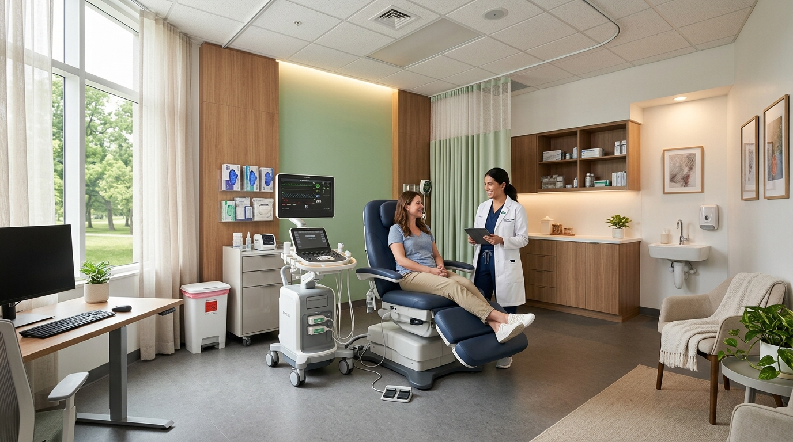

Aliamos curativos especiais de alta tecnologia e terapias avançadas a um atendimento ético e acolhedor, colocando a sua dignidade e recuperação no centro de tudo.
Ouvimos as suas dores de verdade. Acreditamos em um cuidado afetuoso, no respeito individual e no acolhimento familiar em todas as etapas da cicatrização.
Utilizamos terapias avançadas de fotobioestimulação (laser) e curativos especiais de última geração que aceleram consideravelmente o fechamento das lesões.
Oferecemos o que há de melhor em insumos e protocolos especializados a um preço justo, tornando o tratamento de alto padrão viável para quem precisa.
Nossa clínica foi criada com a filosofia de oferecer um atendimento humanizado, acolhedor e ético, colocando o bem-estar e a dignidade de cada paciente no centro de todas as ações.
No Instituto Regenere, entendemos que uma ferida afeta muito mais do que a barreira física da pele — compromete a mobilidade, a autoimagem e a qualidade de vida. Por isso, nossa equipe atua com sensibilidade e competência técnica para aliviar a dor, prevenir complicações e promover uma cicatrização segura e definitiva.
Buscamos ser a principal referência em cuidados avançados de feridas na região, trabalhando em parceria com médicos assistentes e hospitais para garantir a melhor transição do leito hospitalar para o tratamento ambulatorial especializado.

Realizamos avaliação diagnóstica e aplicação de protocolos específicos para as principais feridas e lesões de alta complexidade.
Prevenção e tratamento de úlceras complexas, controle infeccioso rigoroso e alívio de pontos de pressão para preservar a integridade do membro.
Tratamento de feridas nos membros inferiores originadas por insuficiência circulatória de retorno, com aplicação de terapia compressiva avançada.
Cuidados altamente especializados para lesões isquêmicas dolorosas causadas por obstrução arterial, prevenindo infecções e perda tecidual.
Prevenção e tratamento dinâmico de feridas por pressão em pacientes acamados ou com mobilidade restrita, estimulando a cicatrização celular.
Cuidado focado na reabertura indesejada de pontos cirúrgicos pós-operatórios, promovendo granulação rápida e prevenção bacteriana.
Acompanhamento de estomizados, proteção da pele periestoma contra dermatites e orientação sobre o manejo correto de bolsas coletoras.
Aliamos ciência e insumos de última geração para acelerar os ciclos naturais de cicatrização do organismo humano.
A fotobioestimulação por laser de baixa intensidade ativa a microcirculação local, reduz drasticamente a dor (efeito analgésico), combate inflamações e acelera em até 3x a multiplicação das células regeneradoras da pele.
Prescrevemos e aplicamos o que há de mais avançado no mercado de biologia tecidual. Substituímos as coberturas tradicionais por curativos inteligentes adequados ao estágio exato de cicatrização.
Técnicas especializadas alinhadas ao conceito WBP (Wound Bed Preparation) para a remoção segura de tecidos necróticos, fibrinas e biofilmes bacterianos que impedem a ferida de fechar de maneira saudável.
Nossa clínica realiza o tratamento de feridas com curativos especiais, como a Bota de Unna, hidrocoloides, hidrogéis e coberturas com prata nanocristalina, aplicando técnicas científicas modernas de controle de umidade e pH. Isso garante menor desconforto para o paciente, menor frequência de trocas e excelente custo-benefício hospitalar e ambulatorial.
Conheça o ambiente do Instituto Regenere, projetado sob rígidos critérios de biossegurança e higiene, sem abrir mão do aconchego e bem-estar físico.
Ambiente decorado em tons terapêuticos e suaves de verde e dourado, projetado para oferecer conforto, tranquilidade e privacidade desde o primeiro momento.
Consultório equipado com iluminação regulável de fototerapia, laser clínico, macas ergonômicas e materiais esterilizados para procedimentos de desbridamento e coberturas com máxima higiene.
Nossa equipe une saberes complementares da medicina, enfermagem dermatológica e gestão de acolhimento para oferecer o tratamento ideal.
Responsável pela supervisão clínica e diagnóstica, avaliações vasculares e indicação de tratamentos sistêmicos integrados para cicatrização complexa.
Especializada no tratamento avançado de lesões cutâneas, responsável pela aplicação direta das coberturas especiais, desbridamento clínico e sessões de laserterapia.
Garante a excelência operacional da clínica, controle de qualidade dos insumos e o acolhimento burocrático e humanizado de todos os pacientes e familiares.
Esclarecemos as principais dúvidas relacionadas aos tratamentos de feridas oferecidos no Instituto Regenere.
No primeiro atendimento, realizamos uma consulta minuciosa de avaliação da ferida e da saúde do paciente. Analisamos o fluxo sanguíneo local, a presença de tecido desvitalizado, o nível de dor e os hábitos de vida do paciente. Com base nisso, traçamos um Plano de Cuidado Individualizado, definindo as coberturas e terapias (como laserterapia) indicadas e a estimativa de retorno.
Não. A laserterapia de baixa intensidade é um procedimento totalmente indolor, não invasivo e seguro. A maioria dos pacientes não sente nada durante a aplicação ou relata apenas uma leve e agradável sensação de aquecimento local. Pelo contrário, um dos principais efeitos imediatos do laser é o alívio analgésico da dor da ferida.
A Bota de Unna é um curativo compressivo impregnado com uma pasta de óxido de zinco, goma acácia, glicerina e água. Ela é indicada principalmente para o tratamento de Úlceras Venosas nas pernas. Ela funciona fornecendo uma compressão firme que auxilia a musculatura da panturrilha a bombear o sangue venoso de volta ao coração, combatendo o inchaço e criando o ambiente úmido ideal para a cicatrização rápida da úlcera.
Os curativos simples (como a gaze comum) servem apenas para cobrir a ferida, mas muitas vezes secam o leito, grudam no tecido de cicatrização (causando dor e sangramento ao retirar) e não combatem infecções de forma ativa. Já as coberturas de alta tecnologia (hidrogel, hidrocoloide, prata) mantêm a umidade fisiológica perfeita no leito, estimulam o próprio corpo a remover tecidos mortos e combatem infecções sem agredir a pele saudável, reduzindo o tempo total de cicatrização.
Atendemos de forma particular com foco em oferecer o melhor custo-benefício e liberdade de escolha nos melhores materiais para cada caso. No entanto, fornecemos laudo detalhado e recibo detalhado dos procedimentos para que o paciente possa solicitar reembolso junto ao seu plano de saúde/convênio, caso ele possua essa modalidade.
O tratamento precoce e especializado reduz os riscos de complicações graves e infecções. Preencha os dados ao lado para qualificar seu atendimento e ser direcionado(a) imediatamente ao nosso WhatsApp.
(38) 98429-0656
Patos de Minas / Região Noroeste de MG (Consulte atendimento residencial)
Segunda a Sexta: 08:00 às 18:00 | Sábado: Agendamentos especiais
Preencha rapidamente para qualificar seu contato